You are a detective. You received a call from a worried mother that her daughter has been missing for a week. The mother of your neice. The police are getting nowhere. Only you have a chance to learn why she ran away. They say a body has been found in the church. The church of the hidden village you used to take the little girl. The church is off limits, but you know that little girl wouldn't have gone without a fight. She's had such a tough life. But why did she do it? And where did she go? It's up to you to find her hidden clues and figure out why this poor little girl ran away. Can you find all the clues? Or will it just be another Paper Trail that no one can follow?
On Paper Trails, I was the 3D modeller. I used software such as 3Ds Max, Photoshop and Illustator to achieve 3D models and textures. These are all the models and textures I made. Not all of them are used within the game however.
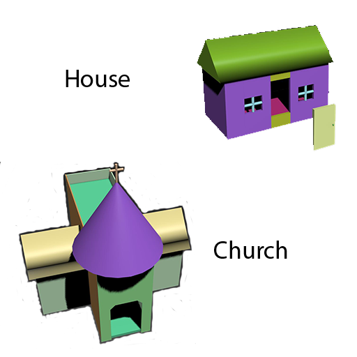
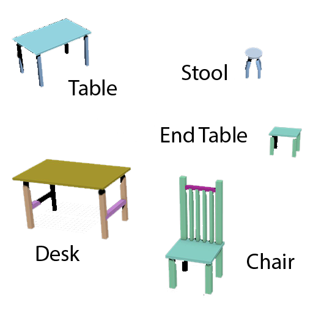
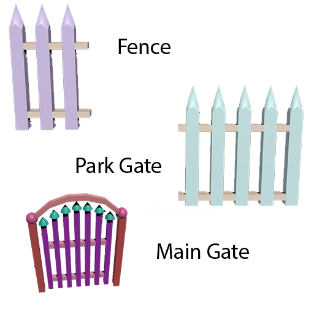
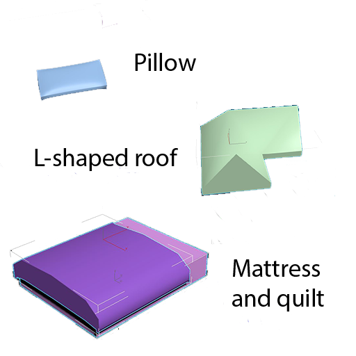
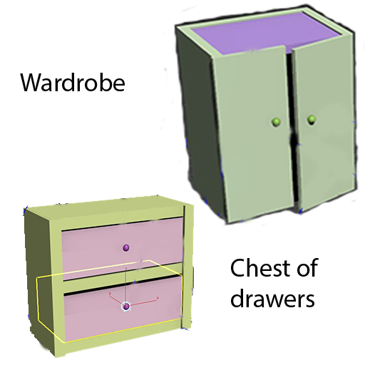
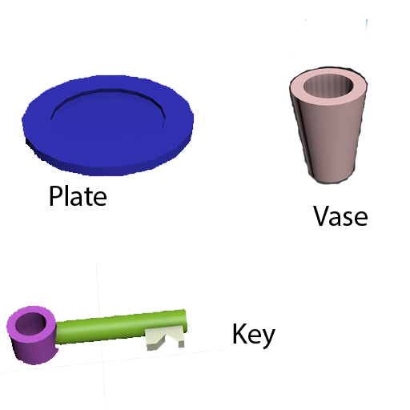
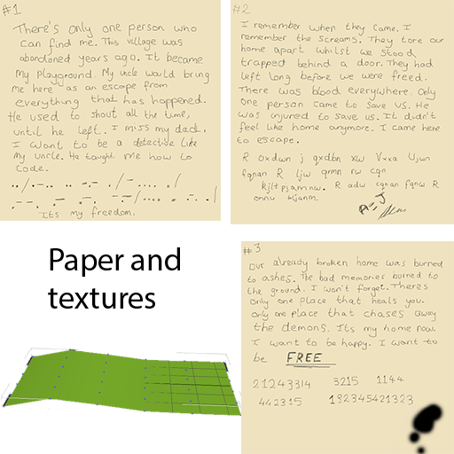
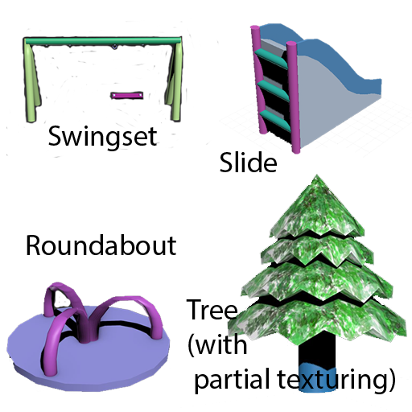
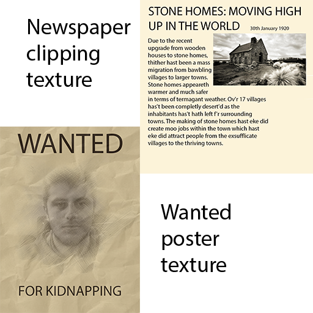
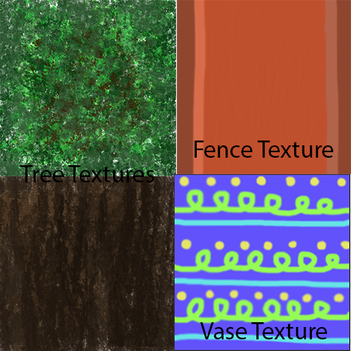
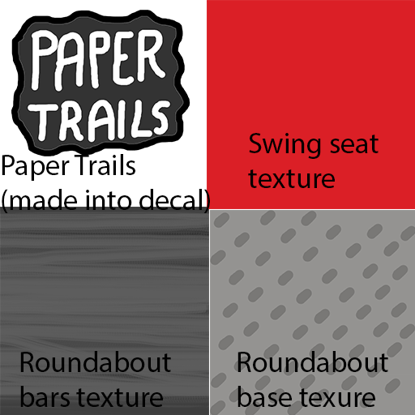
Here is some sketches of proposed designs for objects for Paper Trails! Again, not all were actually made for the game, particularly the storyboard ending as it was too time consuming.
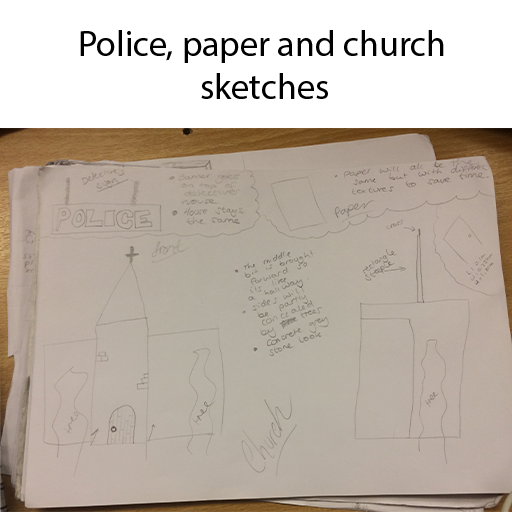
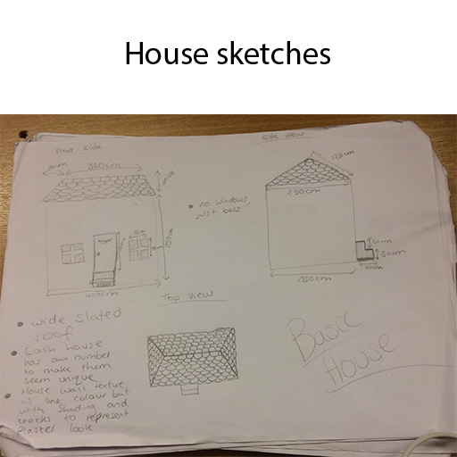
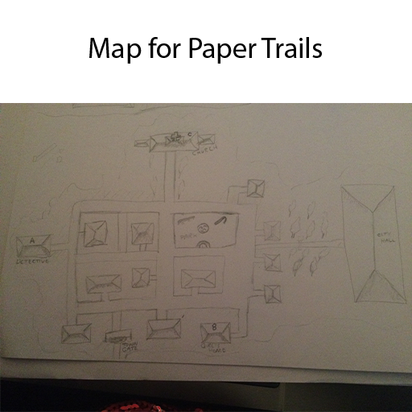
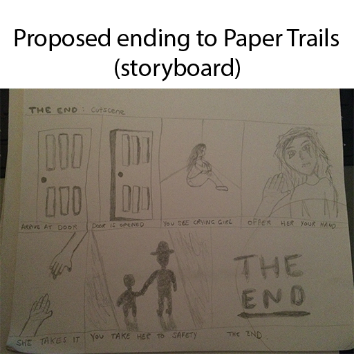
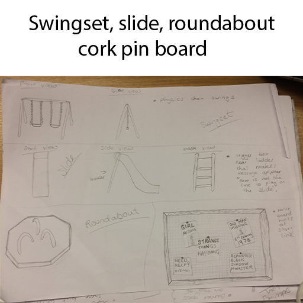
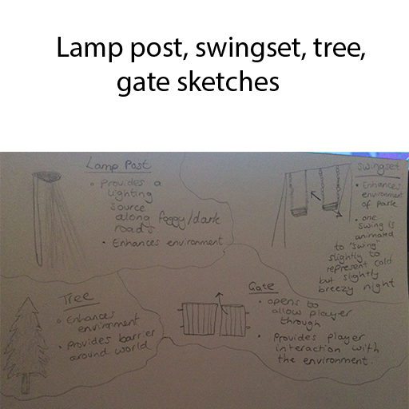